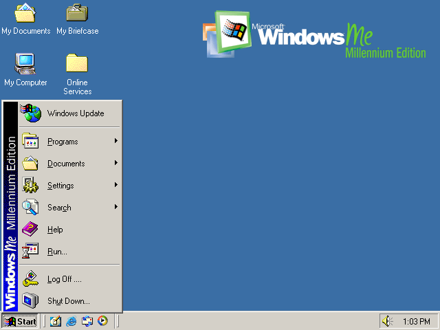
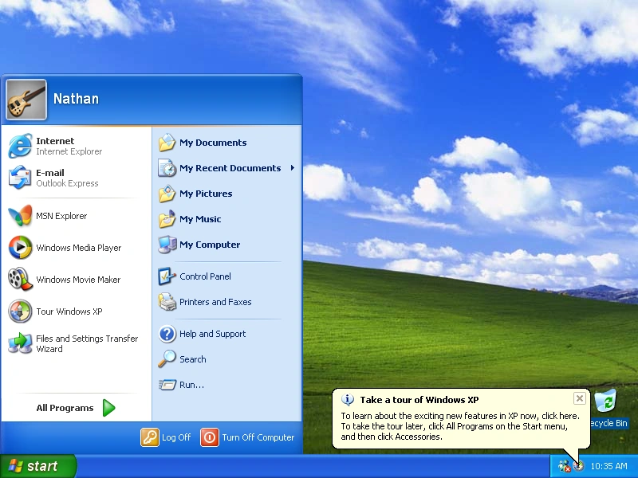
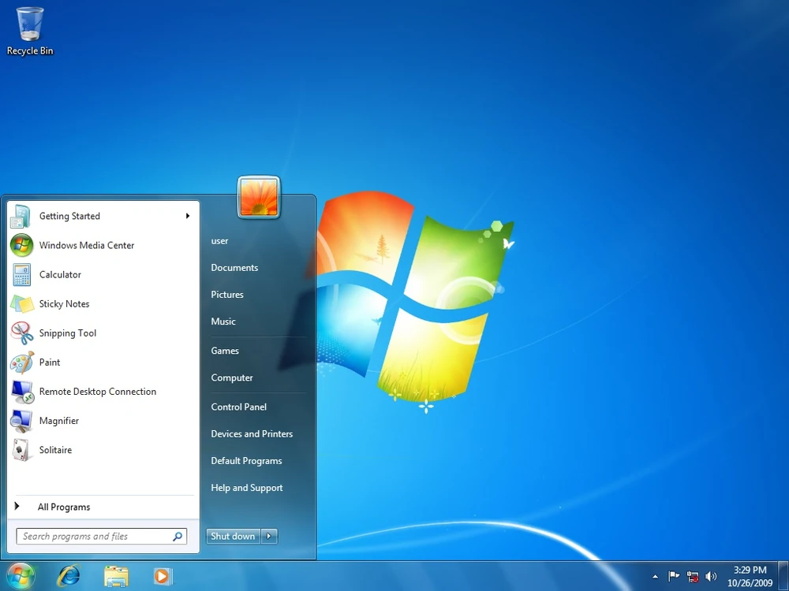

Windows ME was released in the Summer of 2000 and was the last of the Windows 9x series. It was a commercial failure and was not well received by the public.
It was known for its instability and lack of features and was very unstable and a massive storage hogg. While new features were added, such as System Restore,
the features were simply underdeveloped and was not enough to save the OS from being a flop. It also controversially removed the ability to boot into MS-DOS real mode,
which was a massive blow (especially to the business and gaming community) and forced the running of older DOS software to be run within the Windows environment.
Thankfully Windows ME would be shortly replaced by Windows XP in 2001.
Windows XP/Server 2003 Homerun for Team Microsoft

Windows XP was released in the Fall of 2001 and was a massive homerun for Microsoft. It was the first consumer OS to be based on the NT kernel and was a massive
leap forward in terms of stability and security. It was also the first OS to be released in 64-bit (Which came out in 2003) and 32-bit versions. It was also the first
to be released in the Home and Business editions, streamlining Microsoft's OS lineup. Featuring a completely redesigned GUI named Luna, it was a massive hit with the public and
was the most popular OS for over a decade. On the Server 2003 side of things, it was released in multiple editions and was very popular for businesses and enterprises. Adding Active Directory,
Group Policy Management, and .NET services. Windows XP and Server 2003 were some of the most successful OS's Microsoft ever released, and wasn't properly replaced until Windows 7 in 2009.
Windows Vista/Server 2008 A Drag of OS
Windows XP was released in the Fall of 2001 and was a massive homerun for Microsoft. It was the first consumer OS to be based on the NT kernel and was a massive
leap forward in terms of stability and security. It was also the first OS to be released in 64-bit (Which came out in 2003) and 32-bit versions. It was also the first
to be released in the Home and Business editions, streamlining Microsoft's OS lineup. Featuring a completely redesigned GUI named Luna, it was a massive hit with the public and
was the most popular OS for over a decade. On the Server 2003 side of things, it was released in multiple editions and was very popular for businesses and enterprises. Adding Active Directory,
Group Policy Management, and .NET services. Windows XP and Server 2003 were some of the most successful OS's Microsoft ever released, and wasn't properly replaced until Windows 7 in 2009.
Windows 7 Spring Cleaning Hit

Windows XP was released in the Fall of 2001 and was a massive homerun for Microsoft. It was the first consumer OS to be based on the NT kernel and was a massive
leap forward in terms of stability and security. It was also the first OS to be released in 64-bit (Which came out in 2003) and 32-bit versions. It was also the first
to be released in the Home and Business editions, streamlining Microsoft's OS lineup. Featuring a completely redesigned GUI named Luna, it was a massive hit with the public and
was the most popular OS for over a decade. On the Server 2003 side of things, it was released in multiple editions and was very popular for businesses and enterprises. Adding Active Directory,
Group Policy Management, and .NET services. Windows XP and Server 2003 were some of the most successful OS's Microsoft ever released, and wasn't properly replaced until Windows 7 in 2009.